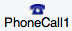

Social Components - App Inventor for Android
Table of Contents
ContactPicker
A button that, when clicked on, displays a list of the contacts to choose among. After the user has made a selection, the following properties will be set to information about the chosen contact:
-
ContactName: the contact's name -
EmailAddress: the contact's primary email address -
EmailAddressList: a list of the contact's email addresses -
ContactUri: the contact's URI on the device -
PhoneNumber: the contact's primary phone number (on Later Android Verisons) -
PhoneNumberList: a list of the contact's phone numbers (on Later Android Versions) -
Picture: the name of the file containing the contact's image, which can be used as aPictureproperty value for theImageorImageSpritecomponent.
Other properties affect the appearance of the button (TextAlignment, BackgroundColor, etc.) and whether it can be clicked on (Enabled).
The ContactPicker component might not work on all phones. For example, on Android systems before system 3.0, it cannot pick phone numbers, and the list of email addresses will contain only one email.
Properties
BackgroundColor- Returns the button's background color
ContactNameEmailAddressContactUri- URI that specifies the location of the contact on the device.
EnabledFontBold(designer only)FontItalic(designer only)FontSize(designer only)FontTypeface(designer only)HeightImage- Specifies the path of the button's image. If there is both an Image and a BackgroundColor, only the Image will be visible.
PictureShape(designer only)- Specifies the button's shape (default, rounded, rectangular, oval). The shape will not be visible if an Image is being displayed.
ShowFeedback- Specifies if a visual feedback should be shown for a button that as an image as background.
TextTextAlignment(designer only)TextColorVisible- Specifies whether the component should be visible on the screen. Value is true if the component is showing and false if hidden.
Width
Events
AfterPicking()- Simple event to be raised after the picker activity returns its result and the properties have been filled in.
BeforePicking()- Simple event to raise when the component is clicked but before the picker activity is started.
GotFocus()- Indicates the cursor moved over the button so it is now possible to click it.
LostFocus()- Indicates the cursor moved away from the button so it is now no longer possible to click it.
Methods
Open()- Opens the picker, as though the user clicked on it.
ViewContact(uri)- Views a contact given its URI.
EmailPicker
An EmailPicker is a kind of text box. If the user begins entering the name or email address of a contact, the phone will show a dropdown menu of choices that complete the entry. If there are many contacts, the dropdown can take several seconds to appear, and can show intermediate results while the matches are being computed.
The initial contents of the text box and the contents< after user entry is in the Text property. If the Text property is initially empty, the contents of the Hint property will be faintly shown in the text box as a hint to the user.
Other properties affect the appearance of the text box (TextAlignment, BackgroundColor, etc.) and whether it can be used (Enabled).
Text boxes like this are usually used with Button components, with the user clicking on the button when text entry is complete.
Methods
RequestFocus()- Sets the EmailPicker active.
Properties
BackgroundColor- The background color of the input box. You can choose a color by name in the Designer or in the Blocks Editor. The default background color is 'default' (shaded 3-D look).
Enabled- Whether the user can enter text into this input box. By default, this is true.
FontBold(designer only)- Whether the font for the text should be bold. By default, it is not.
FontItalic(designer only)- Whether the text should appear in italics. By default, it does not.
FontSize- The font size for the text. By default, it is 14.0 points.
FontTypeface(designer only)- The font for the text. The value can be changed in the Designer.
HeightHint- Text that should appear faintly in the input box to provide a hint as to what the user should enter. This can only be seen if the
Textproperty is empty. Text- The text in the input box, which can be set by the programmer in the Designer or Blocks Editor, or it can be entered by the user (unless the
Enabledproperty is false). TextAlignment(designer only)- Whether the text should be left justified, centered, or right justified. By default, text is left justified.
TextColor- The color for the text. You can choose a color by name in the Designer or in the Blocks Editor. The default text color is black.
Visible- Specifies whether the component should be visible on the screen. Value is true if the component is showing and false if hidden.
Width
Events
GotFocus()- Event raised when this component is selected for input, such as by the user touching it.
LostFocus()- Event raised when this component is no longer selected for input, such as if the user touches a different text box.
Methods
nonePhoneCall

A non-visible component that makes a phone call to the number
specified in the PhoneNumber property, which can be
set either in the Designer or Blocks Editor. The component has
a MakePhoneCall method, enabling the program to
launch a phone call.
Often, this component is used with
the ContactPicker component, which lets the user
select a contact from the ones stored on the phone and sets
the PhoneNumber property to the contact's phone
number.
To directly specify the phone number (e.g.,
650-555-1212), set the PhoneNumber property to a Text
with the specified digits (e.g., "6505551212"). Dashes, dots, and
parentheses may be included (e.g., "(650)-555-1212") but will be
ignored; spaces may not be included.
Properties
PhoneNumber
Events
IncomingCallAnswered(text phoneNumber)- Event indicating that an incoming phone call is answered. phoneNumber is the incoming call phone number.
PhoneCallEnded(number status, text phoneNumber)- Event indicating that a phone call has ended. If status is 1, incoming call is missed or rejected; if status is 2, incoming call is answered before hanging up; if status is 3, outgoing call is hung up. phoneNumber is the ended call phone number.
PhoneCallStarted(number status, text phoneNumber)- Event indicating that a phonecall has started. If status is 1, incoming call is ringing; if status is 2, outgoing call is dialled. phoneNumber is the incoming/outgoing phone number.
Methods
MakePhoneCall()- Makes a phone call using the number in the PhoneNumber property.
PhoneNumberPicker
A button that, when clicked on, displays a list of the contacts' phone numbers to choose among. After the user has made a selection, the following properties will be set to information about the chosen contact:
-
ContactName: the contact's name -
PhoneNumber: the contact's phone number -
EmailAddress: the contact's email address -
Picture: the name of the file containing the contact's image, which can be used as aPictureproperty value for theImageorImageSpritecomponent.
Other properties affect the appearance of the button (TextAlignment, BackgroundColor, etc.) and whether it can be clicked on (Enabled).
The PhoneNumberPicker component may not work on all Android devices. For example, on Android systems before system 3.0, the returned lists of phone numbers and email addresses will be empty.
Properties
BackgroundColor- Returns the button's background color
ContactNameEmailAddressEnabledFontBold(designer only)FontItalic(designer only)FontSize(designer only)FontTypeface(designer only)HeightImage- Specifies the path of the button's image. If there is both an Image and a BackgroundColor, only the Image will be visible.
PhoneNumberPictureShape(designer only)- Specifies the button's shape (default, rounded, rectangular, oval). The shape will not be visible if an Image is being displayed.
ShowFeedback- Specifies if a visual feedback should be shown for a button that as an image as background.
TextTextAlignment(designer only)TextColorVisible- Specifies whether the component should be visible on the screen. Value is true if the component is showing and false if hidden.
Width
Events
AfterPicking()- Simple event to be raised after the picker activity returns its result and the properties have been filled in.
BeforePicking()- Simple event to raise when the component is clicked but before the picker activity is started.
GotFocus()- Indicates the cursor moved over the button so it is now possible to click it.
LostFocus()- Indicates the cursor moved away from the button so it is now no longer possible to click it.
Methods
Open()- Opens the picker, as though the user clicked on it.
Sharing
Sharing is a non-visible component that enables sharing files and/or messages between your app and other apps installed on a device. The component will display a list of the installed apps that can handle the information provided, and will allow the user to choose one to share the content with, for instance a mail app, a social network app, a texting app, and so on.
The file path can be taken directly from other components such as the Camera or the ImagePicker, but can also be specified directly to read from storage. Be aware that different devices treat storage differently, so a few things to try if, for instance, you have a file called arrow.gif in the folder Appinventor/assets, would be:
"file:///sdcard/Appinventor/assets/arrow.gif" or "/storage/Appinventor/assets/arrow.gif"
Properties
noneEvents
noneMethods
ShareFile(text file)- Shares a file through any capable application installed on the phone by displaying a list of the available apps and allowing the user to choose one from the list. The selected app will open with the file inserted on it.
ShareFileWithMessage(text file, text message)- Shares both a file and a message through any capable application installed on the phone by displaying a list of available apps and allowing the user to choose one from the list. The selected app will open with the file and message inserted on it.
ShareMessage(text message)- Shares a message through any capable application installed on the phone by displaying a list of the available apps and allowing the user to choose one from the list. The selected app will open with the message inserted on it.
Texting

A component that will, when the
SendMessage
method is called, send the text message specified in the
Message
property to the phone number specified in the
PhoneNumber
property.
If the
ReceivingEnabled
property is set to 1 messages will not be received. If
ReceivingEnabled
is set to 2 messages will be received only when the application is running. Finally if
ReceivingEnabled
is set to 3, messages will be received when the application
is running and when the application is not running
they will be queued and a notification displayed to the user.
When a message arrives, the
MessageReceived
event is raised and provides the sending number and message.
An app that includes this component will receive messages even when it is in the background (i.e. when it's not visible on the screen) and, moreso, even if the app is not running, so long as it's installed on the phone. If the phone receives a text message when the app is not in the foreground, the phone will show a notification in the notification bar. Selecting the notification will bring up the app. As an app developer, you'll probably want to give your users the ability to control ReceivingEnabled so that they can make the phone ignore text messages.
If the GoogleVoiceEnabled property is true, messages can be sent over Wifi using Google Voice. This option requires that the user have a Google Voice account and that the mobile Voice app is installed on the phone. The Google Voice option works only on phones that support Android 2.0 (Eclair) or higher.
To specify the phone number (e.g., 650-555-1212), set the
PhoneNumber
property to a Text string with the specified digits (e.g., 6505551212). Dashes, dots, and parentheses may be included (e.g., (650)-555-1212) but will be ignored; spaces may not be included.
Another way for an app to specify a phone number would be to include a
PhoneNumberPicker
component, which lets the users select a phone numbers from the ones stored in the the phone's contacts.
Properties
GoogleVoiceEnabled- If true, then SendMessage will attempt to send messages over Wifi using Google Voice. This requires that the Google Voice app must be installed and set up on the phone or tablet, with a Google Voice account. If GoogleVoiceEnabled is false, the device must have phone and texting service in order to send or receive messages with this component.
Message- The message that will be sent when the SendMessage method is called.
PhoneNumber- The number that the message will be sent to when the SendMessage method is called. The number is a text string with the specified digits (e.g., 6505551212). Dashes, dots, and parentheses may be included (e.g., (650)-555-1212) but will be ignored; spaces should not be included.
ReceivingEnabled- If set to 1 (OFF) no messages will be received. If set to 2 (FOREGROUND) or3 (ALWAYS) the component will respond to messages if it is running. If theapp is not running then the message will be discarded if set to 2(FOREGROUND). If set to 3 (ALWAYS) and the app is not running the phone willshow a notification. Selecting the notification will bring up the appand signal the MessageReceived event. Messages received when the appis dormant will be queued, and so several MessageReceived events mightappear when the app awakens. As an app developer, it would be a good idea to give your users control over this property, so they can maketheir phones ignore text messages when your app is installed.
Events
MessageReceived(text number, text messageText)- Event that's raised when a text message is received by the phone.
Methods
SendMessage()- Send a text message
A non-visible component that enables communication with Twitter. Once a user has logged into their Twitter account (and the authorization has been confirmed successful by the IsAuthorized event), many more operations are available:
- Searching Twitter for tweets or labels (
SearchTwitter) - Sending a Tweet (
Tweet) - Sending a Tweet with an Image (
TweetWithImage) - Directing a message to a specific user (
DirectMessage) - Receiving the most recent messages directed to the logged-in user (
RequestDirectMessages) - Following a specific user (
Follow) - Ceasing to follow a specific user (
StopFollowing) - Getting a list of users following the logged-in user (
RequestFollowers) - Getting the most recent messages of users followed by the logged-in user (
RequestFriendTimeline) - Getting the most recent mentions of the logged-in user (
RequestMentions)
You must obtain a Consumer Key and Consumer Secret for Twitter authorization specific to your app from http://twitter.com/oauth_clients/new
Properties
ConsumerKey- The the consumer key to be used when authorizing with Twitter via OAuth.
ConsumerSecret- The consumer secret to be used when authorizing with Twitter via OAuth
DirectMessages- This property contains a list of the most recent messages mentioning the logged-in user. Initially, the list is empty. To set it, the program must:
- Call the
Authorizemethod. - Wait for the
Authorizedevent. - Call the
RequestDirectMessagesmethod. - Wait for the
DirectMessagesReceivedevent.
RequestDirectMessages). - Call the
Followers- This property contains a list of the followers of the logged-in user. Initially, the list is empty. To set it, the program must:
- Call the
Authorizemethod. - Wait for the
IsAuthorizedevent. - Call the
RequestFollowersmethod. - Wait for the
FollowersReceivedevent.
RequestFollowers). - Call the
FriendTimeline- This property contains the 20 most recent messages of users being followed. Initially, the list is empty. To set it, the program must:
- Call the
Authorizemethod. - Wait for the
IsAuthorizedevent. - Specify users to follow with one or more calls to the
Followmethod. - Call the
RequestFriendTimelinemethod. - Wait for the
FriendTimelineReceivedevent.
RequestFriendTimeline. - Call the
Mentions- This property contains a list of mentions of the logged-in user. Initially, the list is empty. To set it, the program must:
- Call the
Authorizemethod. - Wait for the
IsAuthorizedevent. - Call the
RequestMentionsmethod. - Wait for the
MentionsReceivedevent.
RequestMentions). - Call the
SearchResults- This property, which is initially empty, is set to a list of search results after the program:
- Calls the
SearchTwittermethod. - Waits for the
SearchSuccessfulevent.
SearchSuccessful. Note that it is not necessary to call theAuthorizemethod before callingSearchTwitter. - Calls the
Username- The user name of the authorized user. Empty if there is no authorized user.
Events
DirectMessagesReceived(list messages)- This event is raised when the recent messages requested through
RequestDirectMessageshave been retrieved. A list of the messages can then be found in themessagesparameter or theMessagesproperty. FollowersReceived(list followers2)- This event is raised when all of the followers of the logged-in user requested through
RequestFollowershave been retrieved. A list of the followers can then be found in thefollowersparameter or theFollowersproperty. FriendTimelineReceived(list timeline)- This event is raised when the messages requested through
RequestFriendTimelinehave been retrieved. Thetimelineparameter and theTimelineproperty will contain a list of lists, where each sub-list contains a status update of the form (username message) IsAuthorized()- This event is raised after the program calls
Authorizeif the authorization was successful. It is also called after a call toCheckAuthorizedif we already have a valid access token. After this event has been raised, any other method for this component can be called. MentionsReceived(list mentions)- This event is raised when the mentions of the logged-in user requested through
RequestMentionshave been retrieved. A list of the mentions can then be found in thementionsparameter or theMentionsproperty. SearchSuccessful(list searchResults)- This event is raised when the results of the search requested through
SearchSuccessfulhave been retrieved. A list of the results can then be found in theresultsparameter or theResultsproperty.
Methods
Authorize()- Redirects user to login to Twitter via the Web browser using the OAuth protocol if we don't already have authorization.
CheckAuthorized()- Checks whether we already have access, and if so, causes IsAuthorized event handler to be called.
DeAuthorize()- Removes Twitter authorization from this running app instance
DirectMessage(text user, text message)- This sends a direct (private) message to the specified user. The message will be trimmed if it exceeds 160characters.
Requirements: This should only be called after the
IsAuthorizedevent has been raised, indicating that the user has successfully logged in to Twitter. Follow(text user)- Starts following a user.
RequestDirectMessages()- Requests the 20 most recent direct messages sent to the logged-in user. When the messages have been retrieved, the system will raise the
DirectMessagesReceivedevent and set theDirectMessagesproperty to the list of messages.Requirements: This should only be called after the
IsAuthorizedevent has been raised, indicating that the user has successfully logged in to Twitter. RequestFollowers()- Gets who is following you.
RequestFriendTimeline()- Gets the most recent 20 messages in the user's timeline.
RequestMentions()- Requests the 20 most recent mentions of the logged-in user. When the mentions have been retrieved, the system will raise the
MentionsReceivedevent and set theMentionsproperty to the list of mentions.Requirements: This should only be called after the
IsAuthorizedevent has been raised, indicating that the user has successfully logged in to Twitter. SearchTwitter(text query)- This searches Twitter for the given String query.
Requirements: This should only be called after the
IsAuthorizedevent has been raised, indicating that the user has successfully logged in to Twitter. StopFollowing(text user)- Stops following a user.
Tweet(text status)- This sends a tweet as the logged-in user with the specified Text, which will be trimmed if it exceeds 160 characters.
Requirements: This should only be called after the
IsAuthorizedevent has been raised, indicating that the user has successfully logged in to Twitter. TweetWithImage(text status, text imagePath)- This sends a tweet as the logged-in user with the specified Text and a path to the image to be uploaded, which will be trimmed if it exceeds 160 characters. If an image is not found or invalid, the update will not be sent.
Requirements: This should only be called after the
IsAuthorizedevent has been raised, indicating that the user has successfully logged in to Twitter.